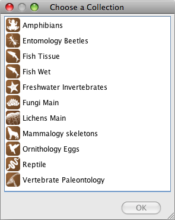

A. Menu Bar  B. Task Bar
B. Task Bar  C. Side Bar
C. Side Bar
 D.
Work Space
D.
Work Space  E. Trash Can
E. Trash Can  F. Tab Bar / Tabs
F. Tab Bar / Tabs G. Status Bar
G. Status Bar
Specify's user interface has been designed to provide easy access to data and to the various processing features and functions of the application. Our target was to make everything easily accessible regardless of the function that you are performing within the application, through the use of a Menu Bar and Task Bar at the top of the Specify window, a Side Bar on the left, and Tabs at the bottom of the Specify workspace. Up to 11 work space windows can now be opened at one time. Tabs allow quick, one-click navigation among data forms, trees and other Specify pages. The figure below shows the various screen components of the Specify window with definitions that follow.
A. Menu Bar
B. Task Bar
The menu bar across the top organizes commands and modules under menus and sub menus. Clicking on a module will open a list of its components in the side bar.
The task bar located at the top of the Specify application is a set of buttons that launch a task-related module. The task bar can be moved by clicking on the two vertical lines found on the left side of the task bar and dragging it away from the application. To move the task bar back to the application click the close button.
Clicking on a task bar button will open a list of its components in the side bar.
The side bar allows a list of components for each module to be activated in the work space. The list typically consists of the actions (print, import) and data (types of forms) available within a module. The side bar will change to reflect the tools available within the active module.
Resize the side bar by guiding the mouse over the line separating the side bar from the work space until a crossbar appears, then click and drag the line to the desired size.
The work space is the area within which tasks are completed. Clicking a module component from the side bar list opens it in the work space. Many work space windows can be open at the same time, but only one can be active.
The trash can allows a saved item (Record Set, Query, Report or Information Request) listed on the side bar to be deleted by dragging and dropping it onto the trash can icon.
Tabs on the tab bar allow work space windows to be activated and closed. More than one window can be open at a time, but only one may be active in the work space. These windows are shown as tabs on the tab bar under the work space. Click a tab to activate the window.
The tab bar allows 11 tabs to be opened, but not all can be viewed at one time. When the tabs move off the tab bar, arrows (

) become available for viewing and selecting tabs.
Tabs are labeled with an icon and module name. If two of the same modules are open the tab will reflect the number of modules that are open.
Example:

A Tabs menu on the Specify 6 menu bar gives the following shortcuts:
- Close Current
- Close All
- Close All Except Current
Close tabs by clicking the
(close) button on the right side of the tab.
The Status Bar at the bottom of the application displays the current User, Discipline and Collection name. A security icon is also displayed to show when security is on (
), or off (
). When appropriate, the status bar also displays messages such as "Invalid Data Entry" and the status of a search.
Specify 6 is designed to store all the data for an institution in one database. This may include many divisions, disciplines, and collections. Each of these levels within an institution has unique data needs; therefore many of the tools within Specify, such as forms and trees, are also unique to each level. Specify must open to a specific collection and users access collection object information based on that collection. For more information regarding levels within Specify please refer to Adding Institutional Levels.

Each session of Specify opens to a collection. The first time Specify is opened a dialog will ask which collection you wish to ope; thereafter, Specify will open to the collection used for the last session of Specify.
To change from one collection to another, choose File > Change Collection, then choose a collection from the resulting dialog.

Change Collection Window
When changing collections the application first shuts all windows. This closes the user out of the collection and a new collection must be chosen before the Change Collections dialog will close.
Available collections are based on the user permissions; therefore, if the current user does not have permission to view or edit a collection that collection will not be included in the dialog list.
Specify 6 displays the current collection name on the right side of the Status Bar.
Note: Selecting Change Collection closes the current collection as well as all open tabs. Also, when a Configuration tab is open in the work space the Change Collection menu item will be disabled. To enable Change Collection simply close the Configuration tab.
Specify includes a highly flexible Security module that allows a system administrator to add users, then limit their operations within and access to the data in Specify. Tools described in the documentation may not be available to you if you have not been given permission to use them. If you can not access a table or tool please check with your Specify Administrator to verify that you have been given permission to use them.
Windows that open outside the work space are referred to as Dialogs.
A right-button click that results in a list box is referred to as a Context Menu.